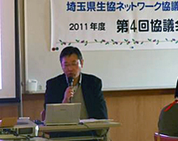
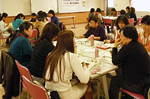

|
|
＜テーマ＞ 各生協の福祉・地域支援の取り組み・組合員活動を紹介しあいます。生協をこえて地域でつながろう、組合員の私たちにできることを交流しましょう。 ＜内 容＞  1．会長挨拶 2．医療生協さいたま「安心ルーム」の取り組み 講師：医療生協さいたままちづくり推進室 安心ルームの目的は「地域の支え合い」で、対象は高齢者・子育て世代・障害のある方です。現在102支部で203の健康ひろばがあります。組合員の自発的な活動で、多くの組合員が活動・利用しています。安心ルームを支えているのは、仲間・場所です。協力者の役割がとても大きく、場所の確保に苦労しています。 3．各生協の取り組り 高齢協（緊急対応ノート他）、住宅生協（高専賃住宅他）、パルシステム埼玉・勤労者生協（4月から統合、いきいきネットワーク他）、医療生協（健康管理と増進他）、さいたまコープ（自治体訪問、地域支え合いマップ他）、各生協の広報誌なども参考に運営委員より報告をしていただきました。 4．昼 食  5．交 流 午前の報告を受け、質問や感想などを出し合いながら交流をしました。 「私が今日・明日からやれること」、「私が一定期間かけてやりたいこと」→「そのために、どんなサポートがあったらいい？」をキーワードにすすめました。 6．各テーブルからの報告 まずは笑顔であいさつするなどの声かけから始めます。次に、近隣を知る、人とのつながりを持つ、人とつながるために健康であることも大切です。そのためには、地域行事へ参加する、仲間作り、公的補助金、公共の場所など地域の協力があるとありがたいです。 |